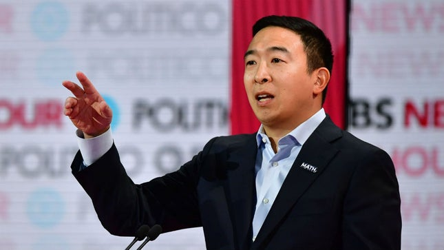

Known for his ability to connect with working-class voters.
Democrat who supports a moderate policy platform.
Signature Issues: Increase America’s leadership on the world stage, strengthen economic protections for the middle and working class, ensure an inclusive democracy and be tough on gun control.
Institute universal background checks - (hyperlink to policy page)
Ban assault weapons and high-capacity magazines
Enact red flag laws (also known as extreme risk laws) that disarm at-risk individuals and allow friends and family to intervene when they observe warning signs
Close the “boyfriend loophole” to keep guns out of the hands of domestic abusers
Close the “Charleston loophole” to allow the FBI additional time to complete every background check
Close the hate loophole to prohibit people convicted of hate crimes from acquiring or possessing firearms
Hold the gun industry accountable by repealing the Protection of Lawful Commerce in Arms Act (PLCAA) to end gun industry immunity
Establish a nationwide gun licensing system
Resume federal funding for gun violence research
Invest in evidence-based urban gun violence intervention programs proven to work
Amy Klobuchar
Overview:
Has served in the Senate for 14 years representing Minnesota
Her signature issues are rebuilding infrastructure, lowering drug prices, and strengthening log-term care for seniors
Instituting universal background checks by closing the gun show loophole.
Banning bump stocks that can increase a semiautomatic rifle’s rate of fire to 700 rounds per minute.
Banning high capacity magazines that hold more than 10 rounds of ammunition.
Quickly raising the age to buy military-style assault weapons from 18 to 21 and fighting to ban the sale of assault weapons.
Providing grants to states to implement extreme risk provisions to empower families and law enforcement to keep guns away from people who show signs of threatening behavior.
Closing the “Charleston loophole” by giving law enforcement additional time to complete background checks.
Closing the “boyfriend loophole” by preventing people who have abused dating partners from buying or owning firearms.
Establishing a waiting period for sales of handguns and assault rifles, which law enforcement can waive in the case of an emergency.
Prohibiting the online publication of code for 3D printing firearms.
Holding manufacturers and distributors of gun kits to the same standards as those of completed firearms.
Providing funding for the Centers for Diseases Control and Prevention to conduct research on firearm safety and gun violence prevention.
Bernie Sanders
Overview:
Has served in the U.S. Senate and U.S. house for a combined 29 years representing the state of Vermont
Mostly known for being a socialist democrat based on his progressive policy platform
Signature issues are Medicare-For-All, the Green New Deal, and College For All
Classifying white supremacists as domestic terrorists
Create a new Office of Gun Violence Prevention
Donald Trump
Overview:
Current President of the United States
His signature issues are immigration, economy, and healthcare
Stance on Policy:
Gun Safety Plan
End gun-free zones in schools & military bases
No guns for people on terrorist watch-list
Make concealed-carry permits valid across all states
Elizabeth Warren
Overview:
U.S. senator from Massachusetts, having served the state since 2013
Former Harvard Law Professor and head of the Consumer Financial Protection Bureau under President Obama
Representing the more left side of the Democratic Party, Warren is a supporter of Medicare-For-All and encourages cracking down on corporate corruption
Red Flag laws, if done correctly, make a lot of sense
“Universal” background checks are easier said than done, raise some fundamental concerns, and may not be the overarching solution many seem to believe.
The Supreme Court’s Heller decision in 2008 confirmed that the 2nd Amendment’s protection of the right to bear arms applies to individuals.
Andrew Yang

Overview:
An entrepreneur and philanthropist
Yang’s signature issue is a Universal Basic Income, a policy that mandates every single American would receive a monthly sum of $1,000 from the government